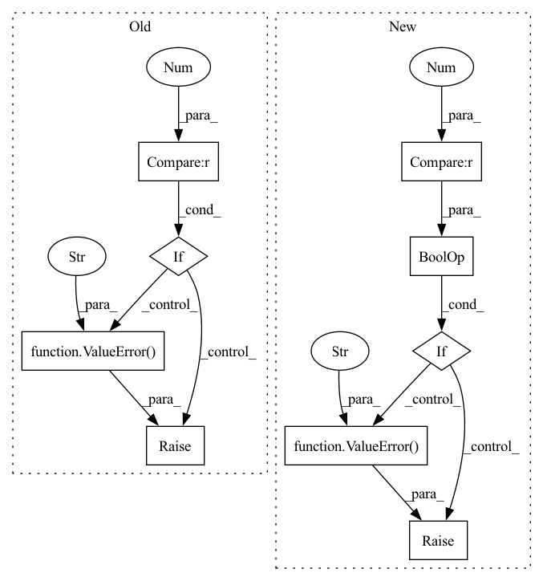

Pattern ID :26390

Before Change
self.lm = lm_module
self.lm_weight = lm_weight
if lm_module is None and lm_weight > 0:
raise ValueError("No language model provided.")
self.state_beam = state_beam
self.expand_beam = expand_beam
self.softmax = torch.nn.LogSoftmax(dim=-1)
After Change
self.lm = lm_module
self.lm_weight = lm_weight
if lm_module != None and lm_weight == 0:
raise ValueError("Language model is provided. \
Set lm_weigt != 0")
self.state_beam = state_beam
self.expand_beam = expand_beam
self.softmax = torch.nn.LogSoftmax(dim=-1)
In pattern: SUPERPATTERN
Frequency: 3
Non-data size: 9
Instances
Fragment ID: 79228209
Project Name: speechbrain/speechbrain
Commit Name: 58cf46b14520c85e143dfe1edc528c046f60a413
Time: 2020-11-10
Author: aheba@zaion.ai
File Name: speechbrain/decoders/transducer.py
M Class Name: TransducerBeamSearcher
N Class Name: TransducerBeamSearcher
M Method Name: __init__(11)
N Method Name: __init__(11)
M Parent Class: torch.nn.Module
N Parent Class:
M File Name: speechbrain/decoders/transducer.py
N File Name: speechbrain/decoders/transducer.py
M Start Line: 259
M End Line: 262
N Start Line: 64
N End Line: 78
'>
Before Change
distributed = distributed or _core.DummyDistributed()
naddrs = len(info.container_addrs)
if naddrs > 1 and isinstance(distributed, _core.DummyDistributed):
raise ValueError("you must provide a valid DistributedContext for a multi-container task")
preemption = _core.Preemption(session, info.allocation_id, distributed)
// At present, we only support tensorboards in Trial tasks.
After Change
session = Session(info.master_url, None, None, cert)
if distributed is None:
if len(info.container_addrs) > 1 or len(info.slot_ids) > 1:
raise ValueError("you must provide a valid DistributedContext for a multi-slot task")
distributed = distributed or _core.DummyDistributed()
preemption = _core.Preemption(session, info.allocation_id, distributed)
'>
Fragment ID: 79228210
Project Name: determined-ai/determined
Commit Name: 9ff7aa86d5a3ac4d25438e6d7763292d7e493206
Time: 2022-04-05
Author: rb@hpe.com
File Name: harness/determined/_core/_context.py
M Class Name: AnonimousClass
N Class Name: AnonimousClass
M Method Name: init(0)
N Method Name: init(0)
M Parent Class:
N Parent Class:
M File Name: harness/determined/_core/_context.py
N File Name: harness/determined/_core/_context.py
M Start Line: 98
M End Line: 104
N Start Line: 90
N End Line: 102
'>
Before Change
@root_validator
def check(cls, values):
if values["num_text_recommendations"] < 0:
raise ValueError("num_text_recommendations cannot be negative")
if values["num_text_recommendations"] == 0 and not values["trigger_rules"]:
raise ValueError("One of num_text_recommendations or trigger_rules should be defined")
return values
After Change
def check(cls, values):
if not values.get("text_recommendations") and not values["trigger_rules"]:
raise ValueError("One of text_recommendations or trigger_rules should be defined")
if values.get("text_recommendations") and values["text_recommendations"].count < 0:
raise ValueError("count cannot be negative")
return values
class IntegrationRequest(BaseModel):
'>
Fragment ID: 79228211
Project Name: digiteinfotech/kairon
Commit Name: e55a5eb326c1646bbeaf5edbd45f62ec0c098275
Time: 2022-10-21
Author: pandey.udit867@gmail.com
File Name: kairon/api/models.py
M Class Name: TwoStageFallbackConfigRequest
N Class Name: TwoStageFallbackConfigRequest
M Method Name: check(2)
N Method Name: check(2)
M Parent Class: BaseModel
N Parent Class: BaseModel
M File Name: kairon/api/models.py
N File Name: kairon/api/models.py
M Start Line: 701
M End Line: 703
N Start Line: 706
N End Line: 710